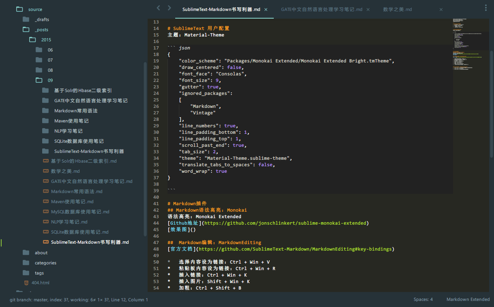

曾尝试寻找在线平台写博客
- segmentfault：专栏文章模块markdown编写可检测剪贴板图片，且需要审核；但是笔记模块不支持
- csdn：改版的markdown编辑器很好，但是不支持粘帖图片，且存在删文风险
几经周折，最终还是选择了自己搭建写作环境：sumblime配置markdown写作环境 + evernote笔记检索+hexo博客框架 + github.io发布；
以sublimeText编辑器作为写作环境（markdown语法高亮/预览），以sublime-evernote发布到evernote，hexo搭建博客框架定期发布到github.io，
谨记编辑器够用就好，内容应始终放在第一位。
安装Package Control
使用Ctrl+`快捷键或者通过View->Show Console菜单打开命令行，粘贴如下代码：
import urllib.request,os; pf = 'Package Control.sublime-package'; ipp = sublime.installed_packages_path(); urllib.request.install_opener( urllib.request.build_opener( urllib.request.ProxyHandler()) ); open(os.path.join(ipp, pf), 'wb').write(urllib.request.urlopen( 'http://sublime.wbond.net/' + pf.replace(' ','%20')).read())
SublimeText快捷键
- 命令面板：Ctrl+Shift+P’
- 列选择：Shirft+右键
- 行选择：Ctrl+L
- 全屏书写：Shirft + F11
SublimeText 用户配置
主题：Material-Theme
|
|
Markdown插件
Markdown语法高亮：Monokai
语法高亮：Monokai Extended
Github地址 
Markdown编辑：MarkdownEditing
设置为MarkdownEditing>MultiMarkDown
官方文档
- 选择内容设为链接：Ctrl + Win + V
- 粘贴板内容设为链接：Ctrl + Win + R
- 插入链接：Ctrl + Win + K
- 插入图片：Shift + Win + K
- 加粗：Ctrl + Shift + B
- 斜体：Ctrl + Shift + I
- 标题：Ctrl + 1/2/3/4/5/6
- 显示Markdown文件标题：Ctrl + Shift + R
Markdown预览：OmniMarkupPreviewer
- Ctrl + Alt + O: 在浏览器中预览(实时无需刷新的哦)
- Ctrl + Alt + X: 导出HTML
- Ctrl + Alt + C: HTML标记拷贝至剪贴板
markdown样式
next主题修改：/next/source/css/_variables/base.styl文件中的$font-family-chinese、$font-size-base等属性定制
|
|
sublime配置笔记同步到evernote
Evernote 的快捷键在 Key Bindings——User配置
|
|
如新增笔记：[“ctrl+e”, “ctrl+s”] 就是先按完ctrl + e 后再按 ctrl + s ；
sublime-evernote配置
|
|
问题记录
markdown笔记与evernote保留字冲突问题
- 问题描述：Evernote complained:The contents of the note are not valid. The inline HTML tag ‘String’ is not allowed in Evernote notes.Retry?
- 问题解决：List
改为List< String>接警